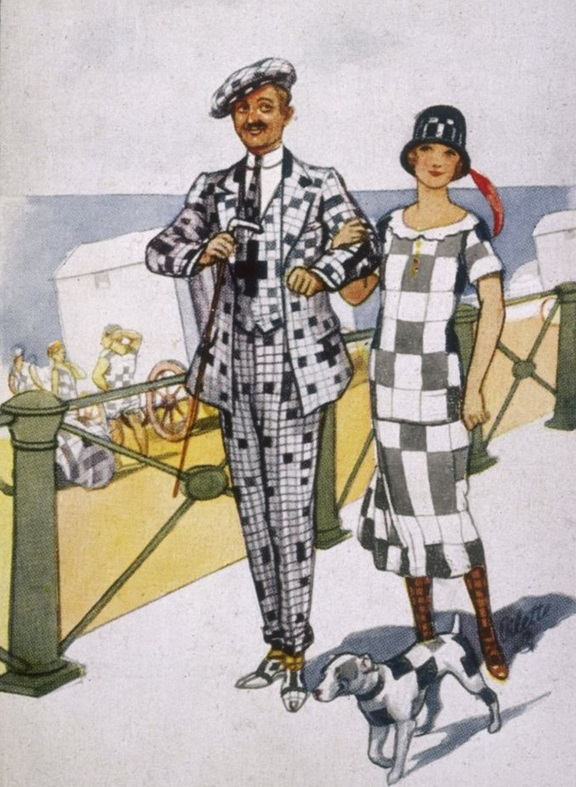

Игры без компьютера
История кроссвордов и интересные факты
 Кроссворд (англ. crossword – пересечение слов) – пожалуй, самая распространённая в мире игра со словами. Свое признание в России кроссворд получил после публикации в журнале "Огонёк" в 1929 году. История этой головоломки – в нашем материале.
"Прародителем" современного кроссворда считается найденная в 19 веке плита с изображенным на ней рисунком (похожим на кроссворд) при раскопках древнеримского поселения Коринум. Плита датируется III-IV веками. А уже в 1939 году при раскопках в Помпеях археологи обнаружили надпись на колонне, которая могла читаться как справа налево, так и сверху вниз. Ученые относят дату её создания к 79 году нашей эры.
Первый кроссворд был опубликован 21 декабря 1913 года в воскресном приложении «Fun» («Забава») к газете «New York Word». Его создателем стал Артур Уинн. Эта дата считается официальной датой рождения кроссворда.
Самый большой кроссворд составлен канадцем Робером Тюрко в 1982 году. В нём в общей сложности 82951 квадрат и 25614 слов.По количеству составленных кроссвордов лидирует англичанин Роджер Сквайрз, который придумывает и публикует еженедельно в среднем 42 "игры слов". К настоящему времени общее число его произведений перевалило за 50 тысяч.
Минимальное время на решение кроссворда из газеты Times - 3 минуты 45 секунд - затратил в ходе соревнования, организованного радиопрограммой BBC "Сегодня", 43-летний англичанин Ройн Дин в декабре 1970 года.
В мае 1966 года газета Times получила письмо от жительницы Фиджи, сообщившей, что ей только что удалось решить кроссворд в выпуске газеты от 4 апреля 1932 года. Таким образом, максимально затраченное время на разгадку кроссворда составляет 34 года.
Мало кто знает, что кроссворд внес определенный вклад в победу союзников во Второй мировой войне. Известно, что во время войны с нацистской Германией британское правительство обращалось за помощью к математикам, лингвистам и специалистам в других сферах науки, но малоизвестен тот факт, что вербовали также заядлых поклонников кроссвордов.